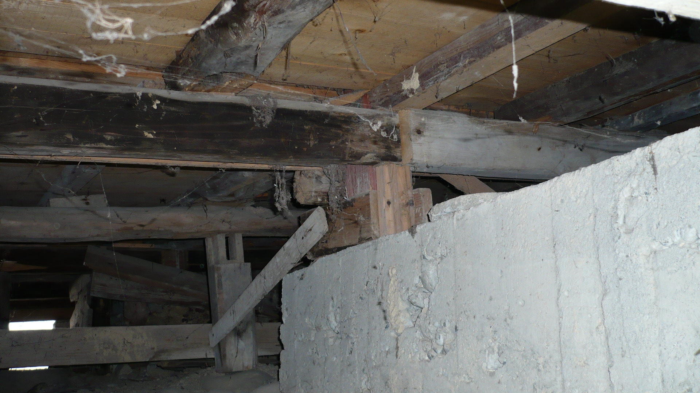
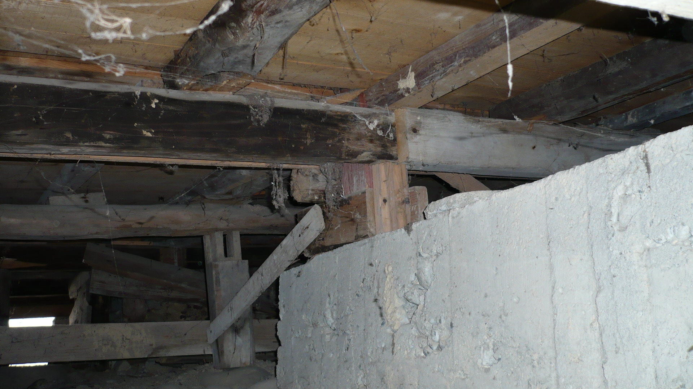
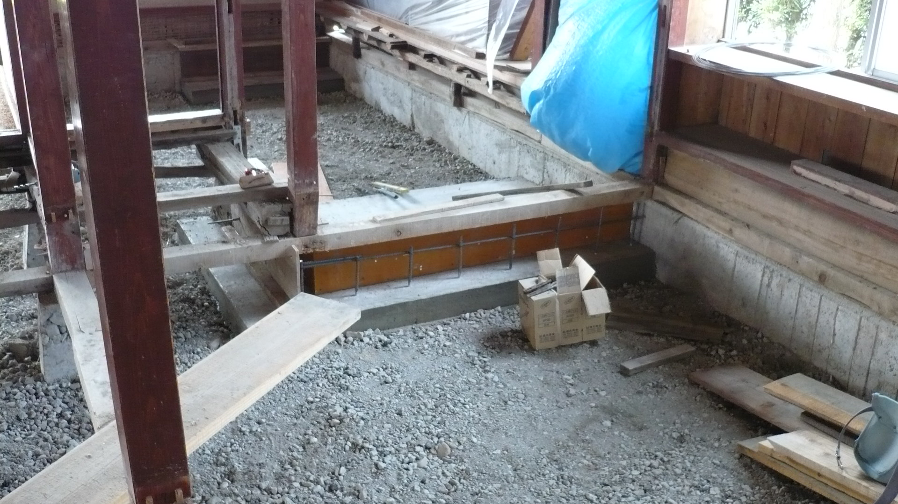
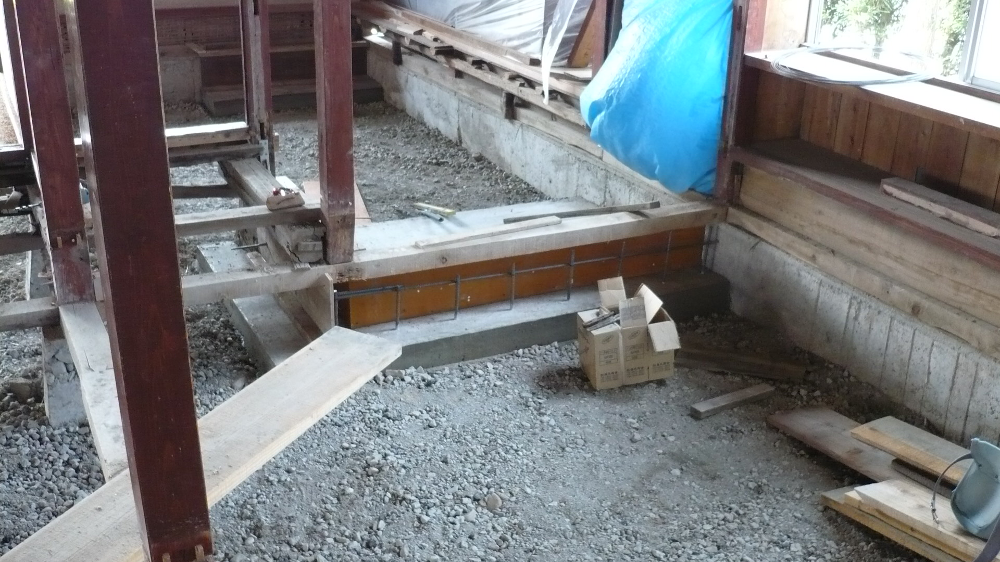
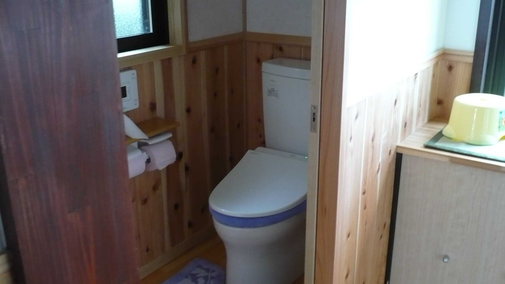
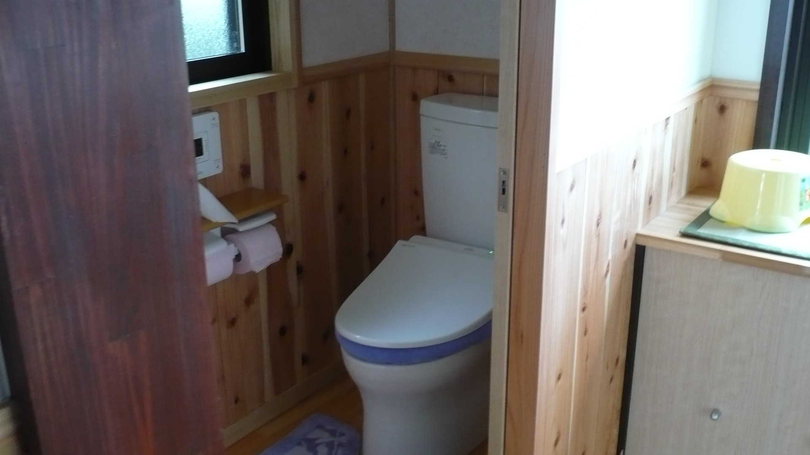

新築増改築
代表の内島は、長年の間富山の住宅と向き合い、設計から施工管理、人材の育成に至るまで幅広い経験を積んでまいりました。
これらの経験から見つけた建築業界の無駄、現場の無駄、会社の無駄の原因を探り、徹底した業務の見直しによって、他社の追随を許さない坪単価と高い品質を両立させることに成功しました。
右の動画もご覧ください。（クリックすると拡大し、音付で再生します。）この様な、美しく現代的な高機能性住宅を、他社と同じか、さらに良い材料で、より高い品質で、信じがたい低坪単価で、ご提供出来ます。
キーワードは必要十分なコミュニケーションです。
こだわりのある方、頑固な方を歓迎します！
頑固な方こそ、当店のお客様です
納得いくまで打ち合わせ、プロの意見もお聞きください
「建ったは良いが、話が違う」、「なぜこんな事になってしまったのか」、「言ったつもりだったのに」
残念な事ですが、量産商品ではない住宅や店舗は、お客様とのコミュニケーションの重要性の認識度の差により、上の様な不満を生んでしまうことが時々あります。
はじめからお客様を騙そう、手抜きしてやろう、と考えている建築家はいませんが、ほんの少しの会話の不足が、後になって「取り返しのつかない事＝こんなはずじゃなかった！」になってしまいます。
間取りや新築時の見栄えだけの問題ではありません。
例えば、あらゆる建築材料には、その材料に独特の適正と欠点があり、あらゆる工法にも、向き・不向きが存在しています。
我々プロの建築家は、お客様からは見えにくい、「長期的な特徴」や「起こりうる問題点」など、そのプロとしての知識を生かし、お客様のご希望が最も良く反映された建物を設計し、施工するのが仕事のはず。
ですから、当店はコミュニケーションを重視します。
時には、お客様の強いご希望であっても、プロとして推薦できないことには意見を申し上げることもあります。
実際にその住居に住み、また、その店舗で営業するのはお客様だからです。 でも、建築士に手間隙をかけさせれば、それだけ高くなるのでは？
はい。その通りです。ですが、だからといって妥協するのは、削るべき場所を間違っています！
この姿勢は、設計段階だけではありません。施工中の職人達にも、常日頃から会話の重要性を教育しております。
内島住宅の新築現場
施工の様子をご覧ください。現場は最高のモデルルームです！
工事前の状況
施工前状況です。
これから、この土地に、家族の健康とゆとりを育む本物の住宅を建築します。
この段階までに、打ち合わせの繰り返しにより、お客様のご希望を煮詰め、プランを練りこみます。 「何故こうしたのか？」を、納得が行くまでご説明します。納得が行くまでご質問ください。
基礎工事
施工に先立ち、地鎮祭を執り行います。
地鎮祭とは建築工事に先立ち、現場の安全とその後の家内繁栄を祈る大切な祭事です。
厳粛な空気の中、粛々と進められていきます。
縄張りの状況です。
測量機器を用いて基準点を測量し、根切り工事（土工事）の為に縄張りしています。
根切り工事です。
このように、紐で示された基礎の中心位置に従って、必要な深さまで掘り進めます。
布基礎の建物の場合は、この穴の中に規格化された型枠を立て込み、基礎としますが、今回の工事ではベタ基礎を用います。
ベタ基礎とは、捨コンクリートを打設の後に、このように型枠をいれ、鉄筋を配置し、コンクリートを打設します。床下全体が巨大な基礎となる工法です。
鉄筋の下の四角いモルタル製のブロックは、スペーサーといいます。
単なる支持物ではありません。これが規格通りに入っていないと、基礎の強度が大幅に低下してしまいます。
余談ですが、時々「程よくさびた鉄筋が良い」という人を見かけますが、それは間違いです。
コンクリート打設が完了しました。
この強力なコンクリートと鉄筋の箱の上に、最新の耐震技術を取り入れた美しい構造体が建て込まれていきます。 また、この基礎そのものが床下からの湿気の上昇を防ぎ、室内を常に快適に保ちます。
棟上
棟上です。
木造住宅に雨は大敵。
出来るだけ速やかに、一気に立ち上げます。

柱と梁の補強には、右の様な金物を用います。 このような金物を用いることで、引き抜き（地震などの強い力が働いたときに、接合部が外れてしまう様な方向に働く力）に強く、しかし、粘り強い家屋が出来上がります。
こちらは基礎から立ち上げられた補強金物の様子。
巨大な基礎から直接立ち上げられたこの様な金物に、柱を連結させます。
上棟式です。
ご覧の通り、集成材を一切使用せず、生きた木材を丁寧に組上げます。
屋内の配置や概観が、この頃になると形になって見えてきます。
高気密・高断熱化

高性能の断熱材を、文字通り蟻の這出る隙間も無いように、丁寧に張込んで行きます。
外壁は当然として、床や天井にも断熱処置を施し、箱状に住空間を囲い込んでしまいます。
ですが、材料が良いだけでは、本当の高気密・高断熱住宅は出来上がりません。誠実な仕事をする、本当の職人が絶対に必要です。
夏暑く、冬寒い住宅にお住まいの方は感覚的にお分かりだと思いますが、意図せず漏れ出す空気や、意図せず入ってくる空気の量は、体感としてはっきり分かるほど膨大な量になります。
黒いのは気密テープです。
例えば、６畳間と同じ体積の空気が１０センチ各の四角形の穴から１時間で出入りするのに必要な空気の流れは、毎秒７０センチです。※ 簡単にというと、手を軽く振ったときに手に感じる空気圧とほぼ同じ。穴に手をかざすと少しスゥスゥする程度でしかありません。実際の家屋で同じ事が起きると、例えば真冬の夜に暖房を切って寝ると、たった１時間で10℃以上、室温が一気に下がります。
良い材料は簡単に手に入ります。ですが、誠実な仕事をする職人を手に入れるのは困難を極めます。ですから、材料だけでは駄目なのです。
※６畳間を182cm×91cm×6畳×2.5メートル（天井高）とすると、６畳間の体積は約25000リットル。3600秒（一時間）で割ると毎秒約７リットルの空気の流れなので、10cm×10cmの穴からの場合は毎秒70cmほどの流れとなります。実際にこの流れがある場合、計算上は１時間で室内空気の半分が入れ替わるため、例えば室温が22℃、外気温が0℃の時に空調を切ると、１時間後の室温は12℃となり、つまり10分あたり２℃も気温が下がるという計算になります。
この頃になると外観はずいぶん家らしくなってきています。
写真では分かりませんが、現場には木の匂いが一杯。施主様にとっては、理想が形になりつつある、一番ワクワクする時でしょう。
仕上げ
まだ内装工事の途中ですが、室内の雰囲気が感じられつつあります。
今回はクロス仕上げ。
構造美を生かした室内空間は、飾りが無くても完成時の色合いや雰囲気を十分連想できます。 小さなお子様がおられるなどで防音対策を行う場合は、この状態にさらに天井をはり、上下の防音対策も万全に計画します。
こちらはもう少し前段階の別室内。
床に傷がつかないよう、完全に養生してある様子が写っています。
大きな開口を縦に並べ、空気の流れをコントロールする間取りです。
竣工・引渡し
外観です。
この中には、在来工法と最新の工法、職人たちの技術、そして何より、施主様のこだわりが詰まっています。
居室。
画面中央・壁面の天井付近に写っているのは各室用の換気装置です。住空間を高気密化し、逆に必要な換気は完全にコントロール可能なように設計されています。
居室。 こちらは木本来の色を生かし明るく仕上げています。
板張りの床が冷たそうに見えますか？いいえ。冬になればその暖かさははっきり分かります。
バスルーム。
どこかのリゾートホテルに迷い込んだようです。 日本人は世界的に見ても風呂には贅沢をしたい民族ですが、いかがですか？
ちょっとした悩みでも、是非一度ご相談ください。
施工中は是非、現場にお越しください。また、当社にご相談をご検討の方も、お問い合わせください。
現場は最高のモデルルームです
内島住宅のリフォーム現場（Ｕ邸）
工事前の状況
施工前状況です。
何度かリフォームを行っているのが分かります。
多少古びているものの、それなりにしっかりしている様に見えるこの建物ですが、調査の為に床下を覗いてみると・・・
 
 これではいけません。
強固な建築物を作る為には、まず何よりも、強固な基礎が必要です。風化も進んでいる上に、元々の構造も良くありません。
過去の設計が古いのはある程度は致し方ありませんが、傾いた材料、何の役にも立たない筋交、高さの計測ミスなど、普通の方がご覧になっても「え？」と思う場所が、沢山見つかります。
計算するまでもなく、強度不足で危険な建物であることが分かります。
解体・基礎工事

まずは、壁、床等の構造上不要な要素を全て解体し骨組みを裸にします。
また、邪魔な礎石や床下に捨てられていた廃材などのゴミも、全て撤去ます。その後、構造計算の結果必要と思われる補強を施します。
 
 
既存の基礎にアンカーを打ち込み、鉄筋コンクリートで連結させています。
また、主構造の柱には連結金物を取り付け、新しい基礎の鉄筋と絡ませて強度強化を図っています。床下一面には防湿シートを隈なく敷きこみ、さらにコンクリートを打設。
この様に、地盤や構造計算の結果次第では、要所要所の補強を行うだけで、相当に耐震強度を引き上げてやることが可能です。
耐震強度の再計算は無料で行っておりますので、お気軽にご相談ください。
施工


当社自慢の現場です。
現在、新築やリフォームをお考えの方は、お気軽にお問い合わせください。施主様のお許しがあれば、いつでも、ご案内致します。
ご覧のように、現代の断熱・気密化工法では、床下や天井にも射熱材や断熱材を隈なく敷き、壁面も同じく完全に囲い込みます。ですから、現代では、断熱工事も大工さんが担当し、その技を存分に発揮してもらわなければなりません。
柱や梁だけでなく、筋交などの補助構造も金物を用いて補強します。近年の不幸な災害の研究結果が、この様な小さな所にも、反映されています。
床の下地は金属製の支柱でコンクリート面から立ち上げます。安価で、腐敗に強く、合理的な施工方法です。
竣工・引渡し

 
 完成です。
いかがでしょう。写真だけでも、落ち着いた色彩や空間はある程度は伝わりますでしょうか。実物はもっと素敵です。
住空間は最新の高気密・高断熱材で完全に囲い込まれ、違いは冬になればはっきり分かります。施工中の写真の様に、耐震補強も万全。これなら大丈夫です。
ちょっとした悩みでも、是非一度ご相談ください。
施工中は是非、現場にお越しください。また、当社にご相談をご検討の方も、お問い合わせください。
現場は最高のモデルルームです
内島住宅のリフォーム現場（Ｓ邸）
工事前の状況
施工前状況です。
建物としてはしっかりしていますが、仕上げなどは、（新築当時は流行だったのでしょうけれども・・・）今となっては、少し古く、印象も寒々としています。
基礎工事
左の２枚の写真のは、床下地を撤去した状態です。
右の３枚は、鉄筋コンクリートによる補強と、湿気防止シートの貼り込みを行っている様子です。
床下からの湿気は、最も荷重がかかる基礎付近の木材や金属を腐敗させ、また、どことなくジメジメし、カビっぽい家にしてしまいます。
鉄筋コンクリートの建物でさえ、土間下には必ずこの様な防湿処理が施されます。
木造住宅なら、なおの事。
小さな工夫ですが、より良い住宅を目指して、在来工法も日々進歩しています。
壁

壁面です。
銀色に光って見えているのは、「射熱材」です。
高性能な断熱材の両面に、さらに金属膜による処理を施してあり、熱を反射させる比較的新しいタイプの断熱素材です。
元々は宇宙服の耐熱設計でしたが、最近になって建築にも応用されました。効果は絶大です。
建具も最新の物に入れ替え、お好みの外装で仕上げます。
屋根

古くなった下地も撤去した後、新しい下地をはり、瓦を一枚一枚引いていきます。
木造住宅に雨は厳禁。よく晴れた日を選び、大人数で一気に完成させてしまいます。
竣工・引渡し
完成です。
今回は、一部の室内は天井も仕上げを行っています。
施工前と見比べてみてください。特に加工などの細工はしていないのですが、こんなに雰囲気が変わります。
また、この住宅の様に、在来工法で建てられた家は、現在のご家族の実生活に合わせて設計・計画を工夫する事で、同じ坪数でも格段に住み良く、広い住宅に生まれ変わらせることが可能です。（何年たっても、何度でも！）
ちょっとした悩みでも、是非一度ご相談ください。
施工中は是非、現場にお越しください。また、当社にご相談をご検討の方も、お問い合わせください。
現場は最高のモデルルームです
当店竣工後の写真
以降は、当店がリフォームを竣工した住宅の写真をピックアップしていきます。気に入ったデザインなどがあればぜひ参考にどうぞ。
T邸
.JPG)
.JPG)
.JPG)
.JPG)
.JPG)
.JPG)
.JPG)
.JPG)


{kind=link}
{kind=link}
{kind=link}
{kind=link}
{kind=link}
{kind=link}
{kind=link}
{kind=link}
{kind=link}
{kind=link}
{kind=link}
{kind=link}
{kind=link}
{kind=link}
{kind=link}
{kind=link}
{kind=link}